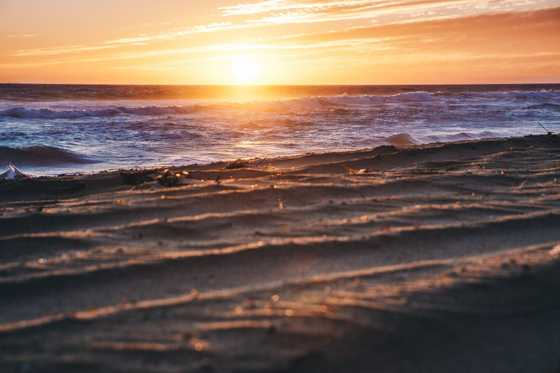
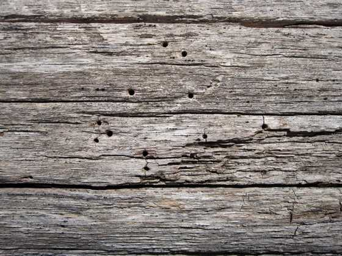
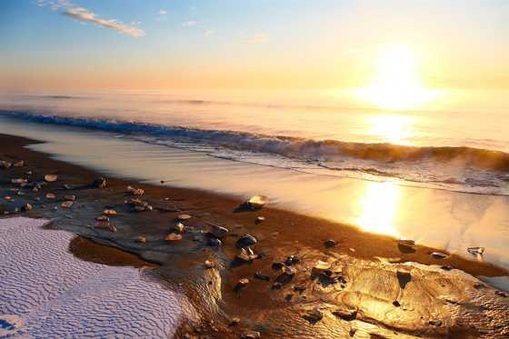
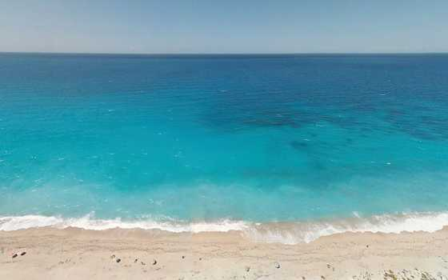
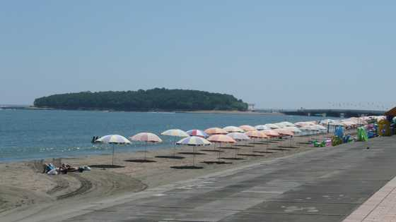
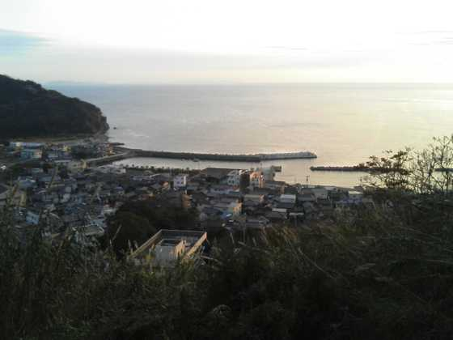

唐津・浜崎の浜辺のカフェ
海風のそばで、
ひと息つく一杯を。
ウインドサーフィンの店に生まれた、浜辺のコーヒースタンド。波と風の音を聞きながら、ゆっくりお過ごしください。
お店の由来
ウインドサーフィンの店から生まれたカフェ。
紹介記事によると、Jack Coffeestandは2020年7月にオープンした、浜崎の海辺のカフェです。隣接するウインドサーフィンショップ「Windjack」に併設されており、Windjackは1973年に始まり、日本でいち早くウインドサーフィンを取り入れたお店とされています。
店内は古材や流木を生かした、DIY感のある吹き抜けの空間で、飾られた流木はWindjackの店長が約15年かけて集めたものと紹介されています。夏は海風を感じ、冬は薪ストーブで暖まる、季節ごとの居心地があるようです。席は1階カウンター、2階テーブル、そして外のテラスです。



情報源: EDITORS SAGA(2025年5月の紹介記事) / Instagram
店名の意味や、オーナーの想いについては確認できていないため記載していません。見出しの言い回しは制作側の表現です。
浜辺のひととき
波の音と、潮の香りと。
海を眺めながらのランチやお茶の時間。写真はフリー素材のイメージで、お店の実際の様子ではありません。





メニュー
ランチ、甘いもの、飲み物。
紹介記事では、日替わりのカレーなどのランチ、マフィンやケーキなどのデザート、ソーダなどのドリンクがあると紹介されています。内容は日によって変わるとのことです。価格・最新の内容は準備中としています。


口コミ
こんな声が届きそうです。
以下は制作側が想像して書いた「イメージ例」で、実在のお客様の声ではありません。
テラスで海を眺めながら飲むコーヒーが気持ちよく、つい長居してしまいました。
流木や古材のある店内が落ち着きます。ランチのあとのデザートも楽しみになりました。
浜辺を少し散歩してから立ち寄るのにちょうどいい、ほっとできる一軒です。
アクセス・ご案内
浜崎の浜辺で、お待ちしています。
| 所在地 | 〒849-5131 佐賀県唐津市浜玉町浜崎1799-71 |
|---|---|
| 電話 | 準備中 |
| 営業時間 | 準備中 |
| 定休日 | 準備中 |
| SNS | Instagram @jackcoffeestand |
営業時間・定休日は天候などで変わることがあるため掲載せず「準備中」としています。最新情報はInstagramをご確認ください。